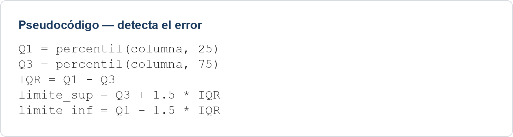

Tarea A · limpiar_columna(df, columna)
Qué se pedía. Una función limpiar_columna(df, columna) que devuelva un nuevo DataFrame con la columna sin espacios sobrantes, en minúsculas, con los vacíos/«NA» convertidos a NaN y sin filas duplicadas.
Solución de referencia
import pandas as pd
def limpiar_columna(df, columna):
df = df.copy()
df[columna] = (df[columna]
.astype("string")
.str.strip() # espacios sobrantes
.str.lower() # mayúsculas/minúsculas
.replace(["", "na", "n/a"], pd.NA)) # vacíos y «NA» → nulo
return df.drop_duplicates() # duplicados, al finalSe limpia primero y se eliminan los duplicados al final. Como el texto ya está en minúsculas, los valores nulos se buscan en minúsculas («na», «n/a»).
Errores frecuentes
- Aplicar
strip()olower()sin encadenar correctamente el accesor.strde Pandas. - Eliminar duplicados antes de limpiar: deja pasar duplicados «disfrazados» por espacios o mayúsculas distintas.
- No gestionar el caso de que la columna ya contenga NaN reales.
Tarea B · detectar_atipicos(df, columna)
Qué se pedía. Una función detectar_atipicos(df, columna) que devuelva solo las filas cuyo valor en la columna sea atípico según el método IQR.
Solución de referencia
def detectar_atipicos(df, columna):
q1 = df[columna].quantile(0.25)
q3 = df[columna].quantile(0.75)
iqr = q3 - q1
limite_inf = q1 - 1.5 * iqr
limite_sup = q3 + 1.5 * iqr
mascara = (df[columna] < limite_inf) | (df[columna] > limite_sup)
return df[mascara].copy()Errores frecuentes
- Invertir Q1 y Q3 al calcular el IQR (da un IQR negativo).
- Usar
&en vez de|en la máscara: con&la condición nunca se cumple, porque ningún valor puede ser a la vez menor que el límite inferior y mayor que el superior. - No copiar el DataFrame filtrado (
SettingWithCopyWarningsi se modifica después).
Pseudocódigo con error

Pulsa sobre el texto para verlo más grande.
Dónde está el error. La línea IQR = Q1 - Q3 está invertida: debería ser IQR = Q3 - Q1. Con el orden del enunciado, el IQR sale negativo y los límites quedan invertidos (el «inferior» resulta mayor que el «superior»).
Pseudocódigo corregido
Q1 = percentil(columna, 25) Q3 = percentil(columna, 75) IQR = Q3 - Q1 limite_sup = Q3 + 1.5 * IQR limite_inf = Q1 - 1.5 * IQR
Casos especiales y límites que se trabajaron: el método IQR es sensible al tamaño de la muestra y puede marcar como atípicos valores que en realidad son válidos en columnas con distribuciones muy asimétricas; y, en la limpieza de texto, los duplicados «disfrazados» por espacios o mayúsculas, y las columnas que ya contienen NaN reales.
Transferencia · contar valores con más de n caracteres
Enunciado. Escribe la lógica de una función que, dado un DataFrame y una columna de texto, cuente cuántos valores de esa columna tienen más de un número determinado de caracteres.
Solución de referencia
def contar_largos(df, columna, n):
# .str.len() da la longitud de cada valor (NaN si el valor es nulo)
# y la comparación con n da una máscara booleana
return int((df[columna].str.len() > n).sum())Idea clave que había que transferir de la tarea original: aplicar una operación elemento a elemento sobre la columna con el accesor .str (como en la limpieza) y filtrar o contar con una máscara booleana (como en la detección de atípicos). Los valores nulos no cuentan, porque NaN no supera ningún umbral.